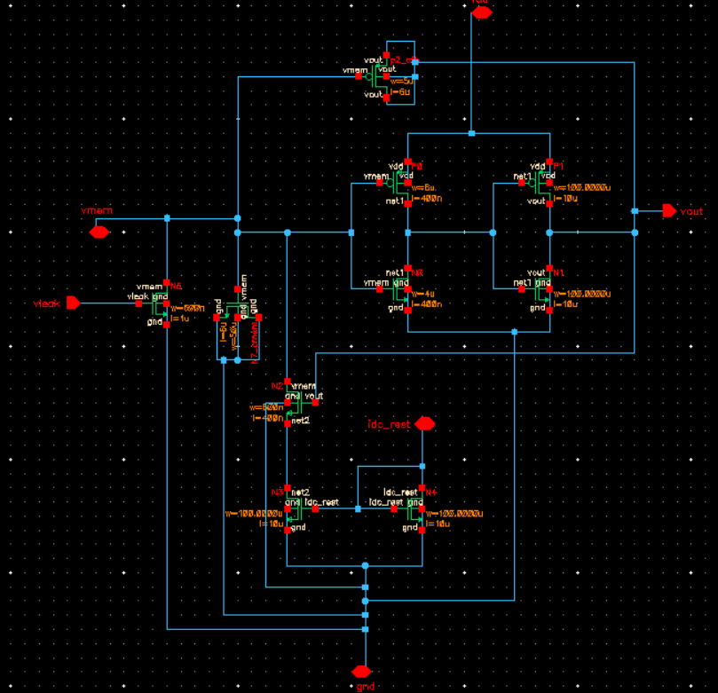
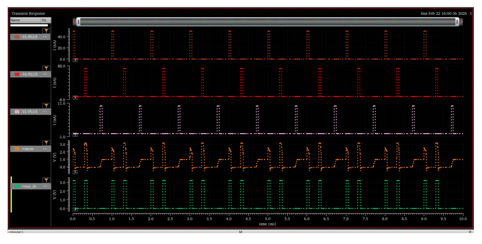
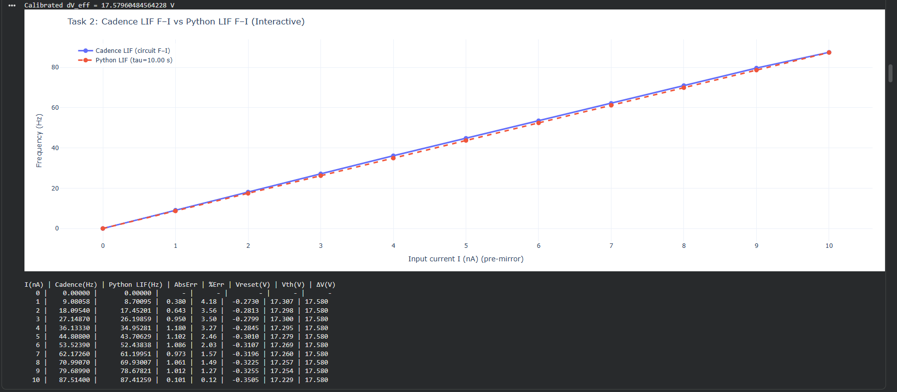

CMOS Leaky Integrate-and-Fire Neuromorphic Neuron
Transistor-level analog CMOS design, neuromorphic hardware, custom layout, and system-level calibration
Cadence Virtuoso · Spectre · NCSU 0.35 µm → GPDK45 · Python · SpikingJelly
Role in the project
Research assistant work under Dr. Hakan Toreyin at San Diego State University (Nov 2025 – present). My contribution covered circuit architecture, transistor-level design and sizing, Spectre simulation and characterisation, parasitic-aware custom layout of the neuron cell, and the system-level modelling that ported measured circuit parameters into a Python spiking neural network.
Technology and current status
The first implementation was built in Cadence using the NCSU 0.35 µm CDK. That kit does not support device fingering through a multiplier parameter, so wide devices could not be split into fingers from the device properties — which constrains both how the sizing can be expressed and how compactly the layout can be drawn.
I am therefore re-sizing and rebuilding the design in GPDK45, where multiplier-based fingering is available. This is the version I am continuing through the current semester. The results below come from the 0.35 µm implementation; the GPDK45 version is in progress and its results are not claimed here.
- Why fingering matters — a single wide device has long gate fingers, which raises gate resistance and makes the drain and source diffusion areas large; splitting the same width into fingers cuts both, and shares diffusion between adjacent fingers.
- Effect on this circuit — diffusion capacitance on the membrane node is exactly what sets the integration behaviour, so how the devices are drawn is not cosmetic here.
- What changes in GPDK45 — the sizing is being redone rather than scaled, because the operating points and available headroom differ between the two technologies.
Objective
Build a compact analog CMOS neuron that reproduces leaky integrate-and-fire dynamics directly in hardware, characterise it in simulation, and then quantify what the circuit's non-idealities cost at the network level by feeding its measured behaviour back into a spiking neural network trained on MNIST.
Architecture
The neuron decomposes into four functional stages: an input current path that charges the membrane node, a leakage path that discharges it, a threshold-detection stage, and spike generation with reset.

Analog design considerations
- Membrane node behaviour — the membrane capacitance and the net charging current set the integration rate; the node is high-impedance, so any coupled charge injection shifts the effective input.
- Leakage current — the leakage path fixes the membrane time constant and how quickly sub-threshold input history decays. Sizing it too aggressively suppresses temporal integration entirely.
- Current-mirror biasing — mirrors set the input and leakage currents; mirror accuracy and output impedance directly translate into firing-rate error.
- Threshold sensitivity — the detection point determines firing threshold, and small shifts in device sizing move it noticeably in the F–I response.
- Sizing trade-offs — MOSFET sizing was tuned against firing threshold, spike frequency, power, and area rather than optimised for any single one.
- Reset behaviour — the reset path has to discharge the membrane node fully without leaving residual charge that biases the next integration cycle.
- Parasitic effects — layout parasitics on the membrane node add to the intended capacitance and alter the time constant, which is why the node was routed defensively.
Design flow
Simulation and characterisation
DC and transient analysis in Spectre were used to verify integrate-and-fire operation and to extract the two parameters that matter at network level: the F–I response and the membrane time constant. Spike waveform shape was checked for clean, non-glitching pulses across the input current range.


Layout

Layout methodology
- Device matching preserved for the mirror pairs that set bias currents.
- Charge-sensitive membrane node routed to minimise coupling area against switching nets.
- Compact placement to keep the cell tileable for array-level replication.
System-level calibration
The measured F–I response and membrane time constant were ported into a LIF model in Python using SpikingJelly, replacing the framework's idealised neuron parameters. The same network was then trained and evaluated on MNIST twice — once with default parameters, once circuit-calibrated — to quantify the accuracy cost of the silicon non-idealities.
Key learnings
- Bias-current accuracy in the mirrors matters more to firing behaviour than raw transistor strength.
- The membrane node is the parasitic-critical net; layout decisions there change measured dynamics.
- Hardware non-idealities are quantifiable at the application level rather than only at the waveform level.
- Characterisation is only useful if the extracted parameters map cleanly onto the software model's variables.